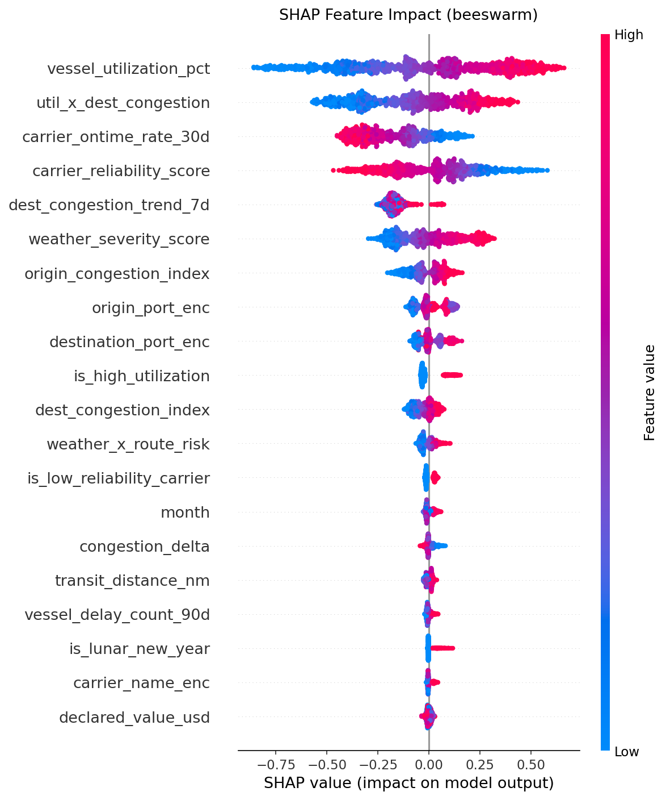
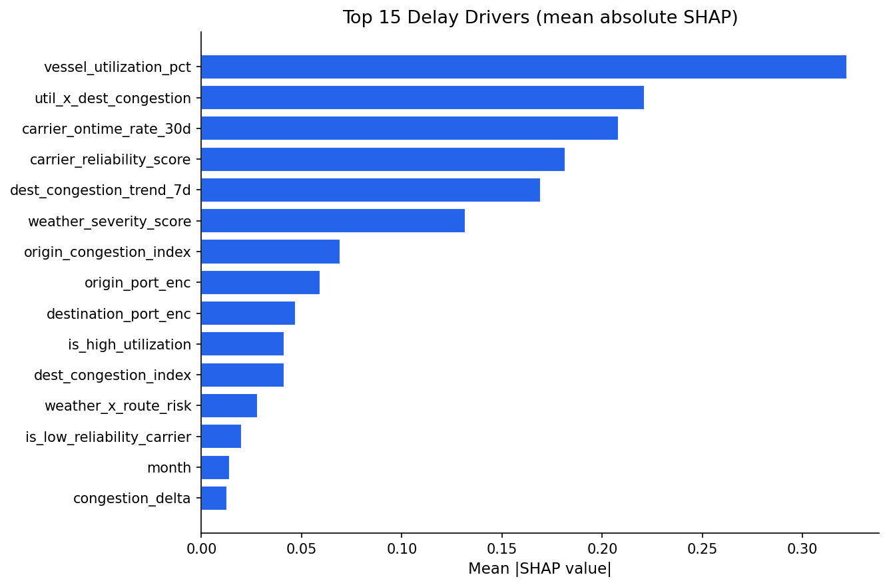
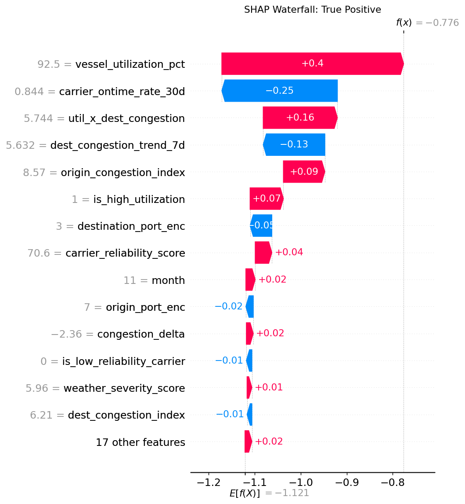
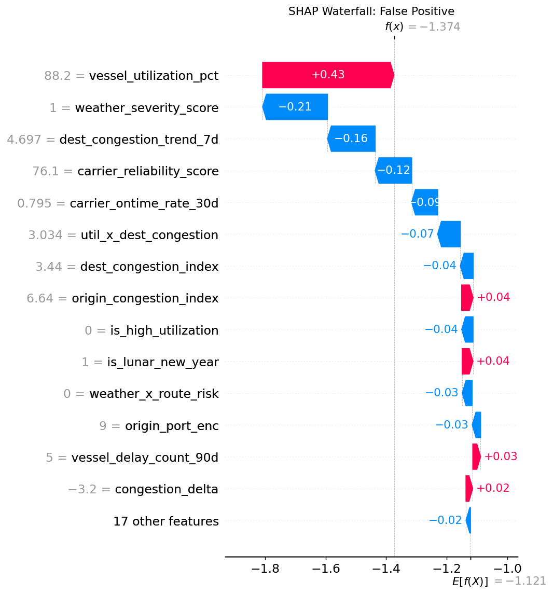
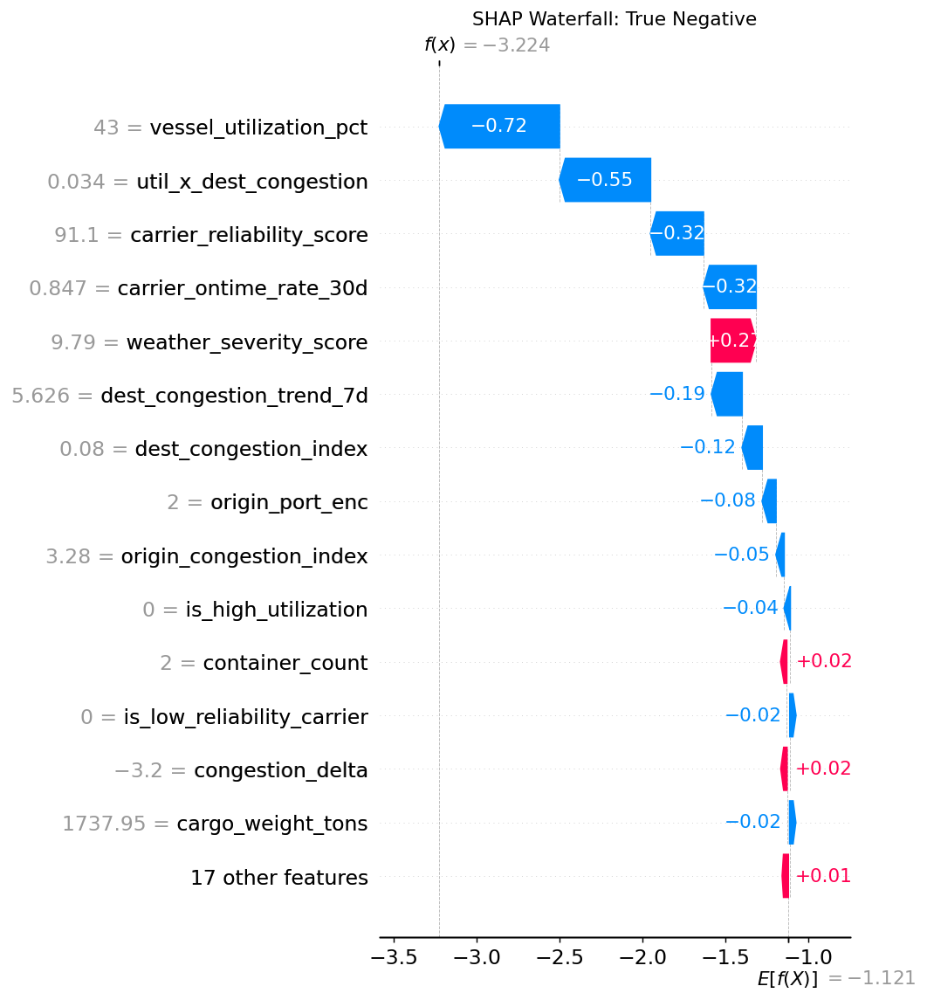

Each dot is one shipment from the 2024 test sample. Position on the x-axis shows how much that feature pushed the prediction toward or away from a delay. Color encodes feature value (red = high, blue = low). Features are sorted by mean absolute SHAP impact. Vessel utilization and the utilization-by-congestion interaction dominate the top.

The average magnitude of each feature's SHAP contribution across all 1,000 test records. This is a cleaner summary than the beeswarm when comparing overall feature importance. The top five are vessel_utilization_pct, util_x_dest_congestion, carrier_ontime_rate_30d, carrier_reliability_score and dest_congestion_trend_7d. Dynamic rolling signals outrank static vessel or route attributes.

A shipment the model correctly predicted as delayed, which did in fact arrive late. Each bar shows one feature's additive contribution from the base value (average model output across the training set). Red bars push the prediction higher toward delay. Blue bars push it lower. The final predicted probability lands above the 0.15 threshold for this shipment.

A shipment the model predicted as delayed but which arrived on time. The features suggest genuine delay risk: high utilization, elevated destination congestion, a weak carrier 30-day rate. The ship happened to arrive on time despite those signals. At a threshold of 0.15, the model is intentionally aggressive: it catches 85% of real delays at the cost of more false alarms like this one.

A shipment the model correctly predicted as on time, which did arrive on time. Here the feature contributions work in the opposite direction: a reliable carrier, low destination congestion and moderate vessel utilization all push the prediction below the threshold. This shows the model has learned that conditions genuinely reduce delay risk, not just that certain routes are always safe.